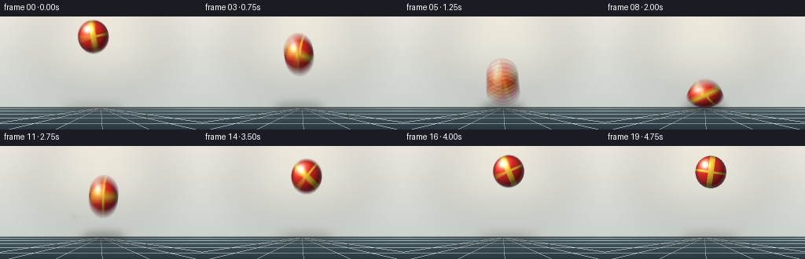
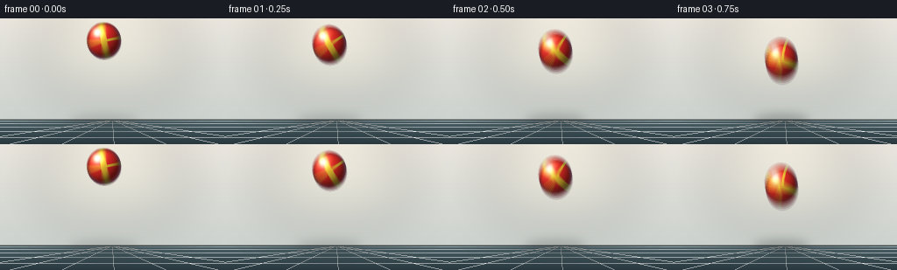

CODING AGENTS AS PIXEL WORLD MODELS
traex/Seed-2.1-Pro-0915 · phygen_026
点击播放 · 原生 RGB 像素
逐轮保存的候选
回放视频、检查图与代码变化。
每份候选均可单独播放。实际图片检查记录在下方工具轨迹中。
候选 01播放与检查图
点击播放 · 原生 RGB 像素


展开代码变化
--- 上一保存版本
+++ 本次保存版本
@@ -0,0 +1,256 @@
+"""Text-to-video: a vibrant elastic rubber ball thrown hard at the ground.
+
+Pure numpy/PIL rendering. 20 frames, 256x144, 4 fps.
+The ball falls with vertical stretch, squashes on impact with a floor ripple
+and dust burst, then rebounds. Rendered at 2x supersampling with substep
+motion blur, then box-downsampled to the target resolution.
+"""
+from pathlib import Path
+
+import numpy as np
+from PIL import Image, ImageDraw, ImageFilter
+
+import artifact_io
+
+# ---------------------------------------------------------------- constants
+W, H, N, FPS = 256, 144, 20, 4.0
+SS = 2 # supersampling factor
+SW, SH = W * SS, H * SS
+SUBSTEPS = 6 # motion-blur samples per frame
+R = 20.0 # ball radius, low-res px
+GY = 116.0 # ground line, low-res px
+rng = np.random.default_rng(7)
+
+# ------------------------------------------------- hand-tuned motion curves
+# center positions (low-res px), one entry per frame
+cy = np.array([24, 27, 33, 42, 54, 70, 99, 105, 103, 97,
+ 84, 70, 58, 48, 41, 36, 33, 31, 30, 33], dtype=float)
+cx = np.array([118, 119, 121, 123, 125, 126.5, 128, 128, 128.5, 129,
+ 130, 131, 132, 133, 133.5, 134, 134.5, 135, 135.5, 136.0])
+# squash envelope: 0 in flight, 1 at maximum compression
+q = np.array([0, 0, 0, 0, 0, 0.05, 0.35, 1.0, 0.75, 0.15,
+ 0, 0, 0, 0, 0, 0, 0, 0, 0, 0], dtype=float)
+# spin angle (radians): fast spin on the way down, reversed after the kick
+spin = np.zeros(N)
+for f in range(N):
+ spin[f] = -2.2 * min(f, 6) / 6.0 if f <= 6 else -2.5 + (f - 7) * 0.22
+spin[7] = -2.5
+
+# flight stretch follows vertical speed
+vy = np.gradient(cy) # px / frame
+speed = np.abs(vy) * FPS # px / second
+stretch = np.clip(speed * 0.0028, 0.0, 0.30)
+ry = np.where(q > 0, R * (1 - 0.45 * q), R * (1 + stretch))
+rx = np.where(q > 0, R / np.sqrt(1 - 0.45 * q), R / np.sqrt(1 + stretch))
+
+
+def sample_curve(arr, t):
+ """Linear sampling of a per-frame array at fractional frame time t."""
+ t = np.clip(t, 0.0, N - 1.0001)
+ i = int(t)
+ return arr[i] * (1 - (t - i)) + arr[i + 1] * (t - i)
+
+
+# ------------------------------------------------------------- background
+def build_background():
+ """Cream studio wall, teal floor, perspective grid, soft spot glow."""
+ bg = np.zeros((SH, SW, 3), dtype=np.float64)
+ gy = int(GY * SS)
+ top = np.array([236, 232, 224.0])
+ bot = np.array([205, 211, 207.0])
+ for y in range(gy):
+ bg[y, :] = top + (bot - top) * (y / gy)
+ ftop = np.array([74, 96, 102.0])
+ fbot = np.array([40, 56, 62.0])
+ for y in range(gy, SH):
+ bg[y, :] = ftop + (fbot - ftop) * ((y - gy) / (SH - gy))
+
+ img = Image.fromarray(bg.astype(np.uint8)).convert("RGBA")
+ d = ImageDraw.Draw(img)
+ vp = (W // 2 * SS, gy)
+ for xb in [-60, 10, 70, 130, 190, 250, 320]:
+ d.line([vp, (xb * SS, SH)], fill=(255, 255, 255, 16), width=1)
+ for p in np.linspace(0.12, 1.0, 7)[1:]:
+ y = gy + (SH - gy) * p * p
+ d.line([(0, int(y)), (SW, int(y))], fill=(255, 255, 255, 14), width=1)
+ d.rectangle([0, gy - 2, SW, gy + 1], fill=(52, 66, 70, 255))
+ d.line([(0, gy - 2), (SW, gy - 2)], fill=(245, 240, 230, 90), width=1)
+
+ glow = Image.new("RGBA", (SW, SH), (0, 0, 0, 0))
+ gd = ImageDraw.Draw(glow)
+ gd.ellipse([40 * SS, -10 * SS, 216 * SS, 96 * SS], fill=(255, 244, 214, 55))
+ glow = glow.filter(ImageFilter.GaussianBlur(28 * SS))
+ img = Image.alpha_composite(img, glow)
+ return np.asarray(img.convert("RGB"), dtype=np.float64)
+
+
+BACKGROUND = build_background()
+
+
+def soft_sprite(size, color):
+ """Pre-rendered soft circle sprite for dust puffs."""
+ s = size * SS
+ y, x = np.mgrid[-1:1:complex(s), -1:1:complex(s)]
+ dist = np.sqrt(x * x + y * y)
+ a = np.clip(1 - dist, 0, 1) ** 2
+ layer = np.zeros((s, s, 4), dtype=np.uint8)
+ layer[..., 0] = color[0]
+ layer[..., 1] = color[1]
+ layer[..., 2] = color[2]
+ layer[..., 3] = (a * 255).astype(np.uint8)
+ return Image.fromarray(layer, "RGBA")
+
+
+DUST_SPRITE = soft_sprite(14, (232, 222, 202))
+
+# dust particles launched at impact (frame 7)
+dust = []
+for _ in range(16):
+ ang = rng.uniform(0.18 * np.pi, 0.82 * np.pi)
+ spd = rng.uniform(5.5, 13.0)
+ dust.append({
+ "x0": 128.0 + rng.uniform(-3, 3),
+ "y0": GY - 2.0,
+ "vx": np.cos(ang) * spd * rng.choice([-1, 1]),
+ "vy": -np.sin(ang) * spd,
+ "g": rng.uniform(0.7, 1.0),
+ "life": rng.uniform(3.6, 5.0),
+ "rad": rng.uniform(2.0, 4.5),
+ })
+
+
+# --------------------------------------------------------------- rendering
+def draw_ball(frame_img, x, y, ax, ay, sangle, squash):
+ """Shaded, striped rubber ball painted into an RGB float array."""
+ x, y, ax, ay = x * SS, y * SS, ax * SS, ay * SS
+ x0 = max(0, int(x - ax - 2))
+ x1 = min(SW, int(x + ax + 3))
+ y0 = max(0, int(y - ay - 2))
+ y1 = min(SH, int(y + ay + 3))
+ if x1 <= x0 or y1 <= y0:
+ return
+ py, px = np.mgrid[y0:y1, x0:x1]
+ u = (px - x) / ax
+ v = (py - y) / ay
+ d2 = u * u + v * v
+ mask = d2 <= 1.0
+ if not mask.any():
+ return
+ d = np.sqrt(np.clip(d2, 0, 1))
+ nz = np.sqrt(np.clip(1 - d2, 0, 1))
+
+ # diffuse shading, key light from upper-left
+ L = np.array([-0.45, -0.55, 0.70])
+ L /= np.linalg.norm(L)
+ diff = np.clip(u * L[0] + v * L[1] + nz * L[2], 0, 1)
+ shade = 0.34 + 0.78 * diff
+
+ base = np.array([230, 44, 38.0])
+ lit = np.array([255, 168, 92.0])
+ dark = np.array([112, 12, 22.0])
+ col = base[None, None, :] * shade[..., None]
+ warm = np.clip((shade - 0.9) * 1.6, 0, 1)[..., None]
+ col = col * (1 - warm) + lit[None, None, :] * warm
+ deep = np.clip((0.45 - shade) * 1.4, 0, 1)[..., None]
+ col = col * (1 - deep) + dark[None, None, :] * deep
+
+ # rotating equatorial stripes, stuck to the deforming surface
+ c1 = u * np.cos(sangle) + v * np.sin(sangle)
+ c2 = u * np.cos(sangle + np.pi / 2) + v * np.sin(sangle + np.pi / 2)
+ stripe = (np.abs(c1) < 0.18) | (np.abs(c2) < 0.07)
+ yellow = np.array([246, 198, 52.0]) * shade[..., None]
+ col = np.where(stripe[..., None], yellow, col)
+
+ # rim darkening plus a cool rim light
+ rim = np.clip((d - 0.78) / 0.22, 0, 1)
+ col *= (1 - 0.4 * rim[..., None])
+ rim_light = np.clip(rim * (1 - diff) * 0.55, 0, 1)[..., None]
+ col += np.array([70, 95, 125.0])[None, None, :] * rim_light
+
+ # glossy specular highlight
+ hu, hv = -0.38, -0.45
+ spec = np.exp(-((u - hu) ** 2 + (v - hv) ** 2) / 0.07) * 0.9
+ col += spec[..., None] * np.array([255, 255, 255.0])
+
+ # contact occlusion at the bottom while squashed
+ ao = np.clip((v - 0.25) / 0.75, 0, 1) * squash * 0.4
+ col *= (1 - ao[..., None])
+
+ col = np.clip(col, 0, 255)
+ region = frame_img[y0:y1, x0:x1]
+ region[mask] = col[mask]
+
+
+def draw_overlays(t):
+ """Contact shadow, impact ripple, flash and dust as an RGBA PIL layer."""
+ layer = Image.new("RGBA", (SW, SH), (0, 0, 0, 0))
+ x = sample_curve(cx, t) * SS
+ y = sample_curve(cy, t) * SS
+ ax = sample_curve(rx, t) * SS
+ ay = sample_curve(ry, t) * SS
+ sq = sample_curve(q, t)
+
+ height = max(0.0, GY * SS - (y + ay))
+ salpha = int(np.clip(110 - height * 0.55, 28, 120) + sq * 60)
+ srx = ax * (1.15 + height * 0.006)
+ sry = max(5 * SS, ay * 0.28)
+ sd = ImageDraw.Draw(layer)
+ sd.ellipse([x - srx, GY * SS - sry, x + srx, GY * SS + sry],
+ fill=(10, 16, 20, salpha))
+ layer = layer.filter(ImageFilter.GaussianBlur(5 * SS))
+
+ fx = Image.new("RGBA", (SW, SH), (0, 0, 0, 0))
+ fd = ImageDraw.Draw(fx)
+ for delay, strength in ((6.0, 0.5), (6.55, 0.32)):
+ age = t - delay
+ if 0 <= age <= 6.5:
+ rrx = (5 + age * 8.5) * SS
+ rry = rrx * 0.30
+ alpha = int(np.clip(strength - age * 0.075, 0, 1) * 150)
+ if alpha > 0:
+ fd.ellipse([x - rrx, GY * SS - rry, x + rrx, GY * SS + rry],
+ outline=(225, 235, 235, alpha), width=SS)
+ fage = t - 6.7
+ if 0 <= fage <= 0.9:
+ fr = (6 + fage * 26) * SS
+ fa = int((1 - fage / 0.9) * 120)
+ fd.ellipse([x - fr, GY * SS - fr * 0.32, x + fr, GY * SS + fr * 0.32],
+ fill=(255, 236, 190, fa))
+ for p in dust:
+ age = t - 7.0
+ if 0 <= age <= p["life"]:
+ px = p["x0"] + p["vx"] * age
+ py = p["y0"] + p["vy"] * age + 0.5 * p["g"] * age * age
+ fade = 1 - age / p["life"]
+ rad = p["rad"] * (0.6 + 0.5 * age) * SS
+ sprite = DUST_SPRITE.resize((max(2, int(rad * 2)),) * 2)
+ a = sprite.getchannel("A").point(lambda a: int(a * fade * 0.85))
+ fx.paste(sprite, (int(px * SS - rad), int(py * SS - rad)), a)
+ return Image.alpha_composite(layer, fx)
+
+
+def render_frame(f):
+ acc = np.zeros((SH, SW, 3), dtype=np.float64)
+ for s in range(SUBSTEPS):
+ t = f + (s + 0.5) / SUBSTEPS
+ img = Image.fromarray(BACKGROUND.astype(np.uint8)).convert("RGBA")
+ img = Image.alpha_composite(img, draw_overlays(t))
+ arr = np.asarray(img.convert("RGB"), dtype=np.float64)
+ draw_ball(arr, sample_curve(cx, t), sample_curve(cy, t),
+ sample_curve(rx, t), sample_curve(ry, t),
+ sample_curve(spin, t), sample_curve(q, t))
+ acc += arr
+ acc /= SUBSTEPS
+ acc = acc.reshape(H, SS, W, SS, 3).mean(axis=(1, 3))
+ return np.clip(acc, 0, 255).astype(np.uint8)
+
+
+def main():
+ frames = np.stack([render_frame(f) for f in range(N)], axis=0)
+ case_dir = Path(__file__).resolve().parent
+ artifact_io.save(frames, case_dir)
+ print(f"saved {frames.shape} to {case_dir}")
+
+
+if __name__ == "__main__":
+ main()
可观测工具轨迹
实际执行的命令与返回图片。
命令 1exit 0
/bin/bash -lc 'ls -la && cat prompt.txt && echo "=== RULES ===" && cat GENERATION_RULES.md && echo "=== SPEC ===" && cat task_spec.json'
命令 2exit 0
/bin/bash -lc 'cat artifact_io.py && echo "=== PLAYER ===" && cat player_template.html'
命令 3exit 1
/bin/bash -lc 'cd . && time python generate.py && ls -la'
命令 4exit 0
/bin/bash -lc 'cd . && time python generate.py && ls -la frames | head -6 && ls -la pixels.npz inspection.png index.html'
保存候选 1 份；完成命令 4 次；可验证图片返回 0 张。原始 API 响应与完整日志保留在本地。